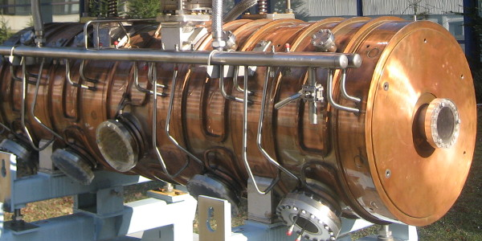
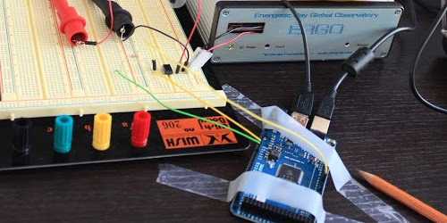
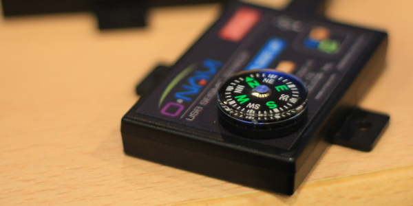

Blog Entries
-

2nd CERN Summer Webfest
The second CERN Summer Student Webfest has been an amazing event. Physicists, designers, computer scientists and engineers worked together in a 48 hours marathon to create a set of amazing projects involving physics and modern web technologies.
This year, students worked in data visualizations for the most popular scientists at CERN, an antimatter CrowdCrafting.org application, games for teaching and learning physics using different type of games: simulators, puzzles, strategy, etc., reproducible science, and more many more!
The first day, the students pitched several projects and ideas. Most of the students proposed a game based solution for teaching and learning physics, becoming this category the most popular with 8 games! There were other categories:
This year we have introduced a series of tutorials where the students could learn new technologies, techniques, etc. Additionally, we invited them to also propose to give some of the tutorials, making the webfest a very alive event where not only the organizers take part but also the participants suggesting and creating new elements in it.
The tutorials were really interesting:
- Making Website and Media using Mozilla Webmaker and Popcorn Maker, by Michael Kohler (Mozilla).
- Introduction to CrowdCrafting/PyBossa, by Daniel Lombraña González (Citizen Cyberscience Centre).
- Facemesh Clone -- Web Programming Workshop by S.p. Mohanty a CERN Summer Student.
- Hardware Programming and Arduino by James Devine (CERN).
- Communicating Your Science by Julie Gould (The Movile Collective)
- Masterclass on particle physics -- Measuring lifetime of D0 particle by Andrey Ustyuzhanin (CERN).
As in the previous year, the atmosphere was amazing. The students participated in the tutorials (when they were not really busy working on their projects), chat and about everything: code, code, code and work ;-)
On Sunday afternoon, the final pitches about the projects were made and the winner was announced: Mother Hunt. In this game you are an end state particle that explores CERN to try to reconstruct his family history of decay mothers and ancestors.
The team created a 3D world using some of the available models at CERN, making a very interesting and immersing game in the CERN scenario. They created a short story line that could be played in one computer, and they are hoping to release the software, so more people could play it and learn physics.

The other two final chosen projects were:
- Reproducible Science: an IPython module for ROOT that allows any scientist using the ROOT software to share and improve their research on the web.
- Popular Physics in History a web tool that analyzes the most popular scientists at CERN querying back end services like CERN Document Server and INSPIRE High Energy Physics Library.
The event was a success, and we hope that all the students had a lot of fun participating and developing their projects. We will be update this entry with more photos and videos, as soon as they are available.
-
Analyzing Icelandic conviction rates
CrowdCrafting.org hosts a wide variety of applications that range from science to humanities. Since the official launch of CrowdCrafting.org, lots of applications have been created , but one of them has done a really impressive job: Héraðsdómar - sýknað eða sakfellt.
Héraðsdómar - sýknað eða sakfellt is an application developed by Páll Hilmarsson (@pallih, Github). The application was one of the most popular and active applications in CrowdCrafting.org when it was published (300 volunteers helped!), so I wanted to interview the author and ask some questions about it: why he created the application, what was the result, etc.
Páll told me that he created the application after reading the an article published in an Icelandic news web site.

The article analyzed the conviction rates of a named judged in the Reykjavik district court, stating that the conviction rates for cases where he presided as a judge was 99%. Páll found it interesting, but also "biased" as the reporter only analyzed one judge.
After the publication of the story, some bloggers and readers of the post, discussed about why analyzing only one judge, reporting it back to the author. The journalist addressed all the questions and comments answering that
calculating all the conviction rates for every case would take too long.Páll was not happy with this answer, so he decided to show him, and other reporters, that this could be easily done by crowdsourcing the job, and that it would not take too long.
Páll uploaded around 4,700 rulings as tasks, and the volunteers analyze them in 7 days! Each ruling went to at least three different users, totaling 14,208 assessments. In the end more than 17,000 assessments were made by over 300 users! (you can check the stats here).
But here it comes the best part, Páll only spent 10 hours in this project (including the time to scrape the rulings, set up the tasks on CrowdCrafting.org and displaying the results on his blog. Amazing!
Note: Entry photo by mira66 (CC BY-NC-SA 2.0).
-

CERN Summer Webfest
The first weekend of August of 2012, CERN hosted the first Summer Student Webfest where physicists, designers, computer scientists and engineers worked together in a 48 hours marathon to create a set of amazing web applications prototypes involving physics and modern web technologies.

The first day, different projects were presented so the students could decide in which one they wanted to participate. Some of the ideas were proposed by the organizers, but also some of the students came with really good suggestions. At the end the projects that were chosen to work over the 48 hours period were:
- Open Data for CERN site
- ParticleQuest a game to learn physics
- A cheap Cosmic Ray detector built with Arduino and Android
- A new infographics and explanation for the Standard Model
- A revamped LHC Dashboard using HTML5
- Virtual Worlds for the LHC@Home platform
One of the most repeated "memes" during this first day was that everyone wanted to make as easy as possible the explanations about physics for the general public. As a consequence of this overlapping, a huge team was created regarding the idea of explaining physics via a new Standard Model as one month ago the Higgs Boson discovery was announced at CERN.

The next 48 hours were amazing! The students arrived the Saturday morning around 10:00 am and they worked almost 48 hours non-stop in order to win the prize: a trip to the Mozilla Festival in London in November, courtesy of the Mozilla Foundation.
The event was free-form based, so some of the projects evolved during the event, and for example the mega-team around making more accessible physics for the public split themselves in two small teams that worked together in the Standard Model and a new awesome idea about creating a new web tool to create Feyman diagrams and use it to explain physics :-)
It is really difficult to tell you how amazing it was, so I "interviewed" each participant so they have to explain what they have done during the weekend and if they were enjoying the event. The following video (14 minutes long!) shows how people worked together in different teams and their projects. The video was recorded before the prize ceremony, so you can feel the pressure of not having enough time to improve a bit more their project :-)
The winning project was the ParticleQuest game (you can actually play it at http://particlequest.com) a fork of the Mozilla's Open Source game BrowserQuest.
The competition was really tough as the projects created really awesome applications, but the best part for me was seeing how these students got really involved in the event.
Here you have some photos I took of the final applications (check the cosmic ray detector video):
We asked the participants what they liked about the event and if they were happy. The mega-team basically summarized the event like this:
- The event should start earlier, so we have more time to work on the project.
- We have been able to self-organized ourselves without a supervisor!

Amazing!! Indeed all the participants loved the event. Just to give you an example: after the prize ceremony John Ellis gave a special talk about the State of the Higgs Address. A few minutes after the full event was over, the students started to organized themselves again to keep working in their respective projects.
Another interesting outcome from the event was that only a few designers joined, but they were key persons to the success of all the projects, as they actually helped in every project (special mention to Andre-Pierre Olivier for his help in almost every project!).
The source code of the projects is available in Github, so if you want to know what we actually did during those 48 hours, go to Github and enjoy it!
If you want to see more photos from the event check the album I've created with pictures from almost all the participants!
The event was co-organized by the Citizen Cyberscience Centre and the Peer 2 Peer University, and sponsored by the Mozilla Fondation and the Shuttleworth Fondation.
-

Earthquakes & citizen scientists
The Asia@Home workshop started focused on earthquakes and volunteers to track them. The project The Quake Catcher Network presented their results an approach in different parts of the world (Chile, Christchurch, California, etc.) and a collaboration with Taiwan for monitoring earthquakes.
This project uses low cost USB sensors to detect earthquakes that can be attached to any computer with an USB port. The only requirement is to screw the sensor to a wall or a surface so when there is an earthquake you the sensor will not jump.
There was a talk about a different sensor, Palert, that tries to measure earthquakes but using a different approach: self-sustained sensors that can have a battery to record the shock waves even though there is no power supply.

While all these talks presented the point of view of the projects, we have a nice talk from the point of view of the volunteers: Dudumomo. He presented several charts about how volunteers provide lots of CPU cycles to different projects, and only ask -in most of the cases- news about the research and progress that the project is achieving thanks to their donations.
There was a lot of discussion about different ideas to engage more volunteers, communities, outreach, new places for deployment, etc. After a first successful day, we relaxed a bit having dinner in one of my favorite Taiwanese restaurants: The House of tea, where everything, and when I say everything, is everything, is cooked with tea leaves :)
-